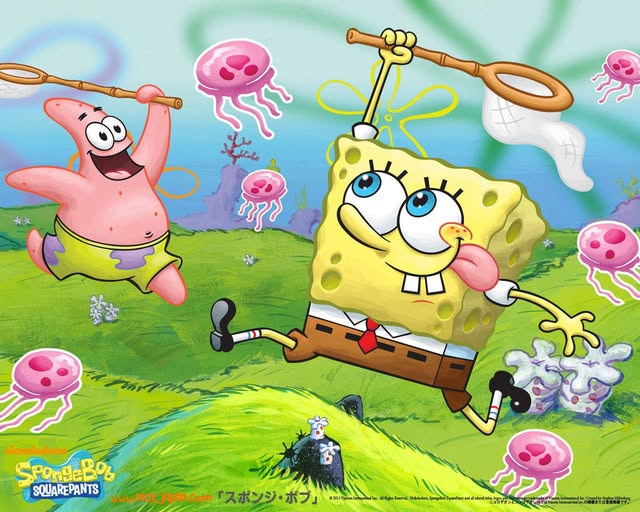
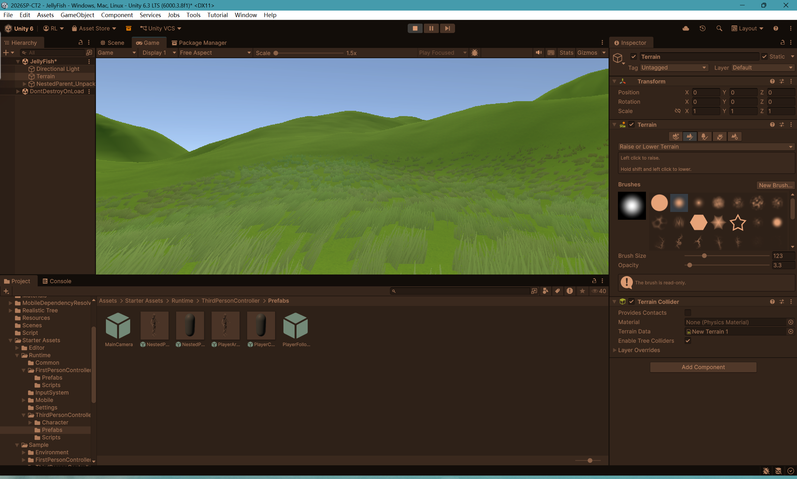
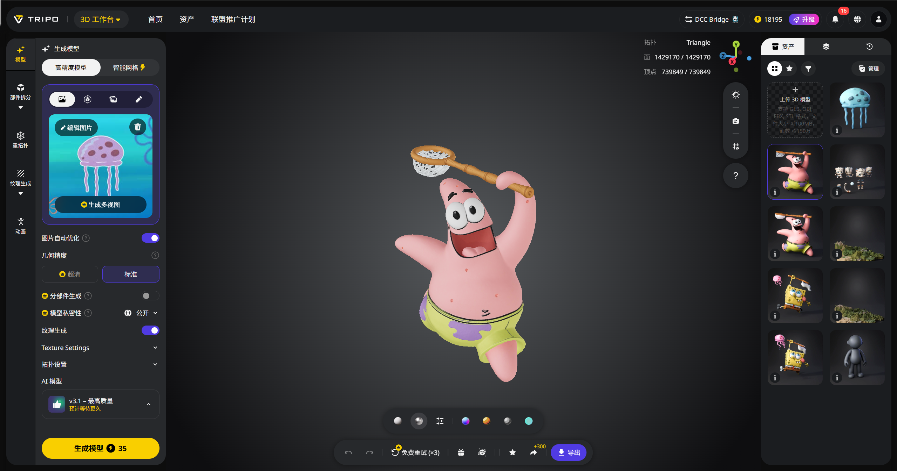
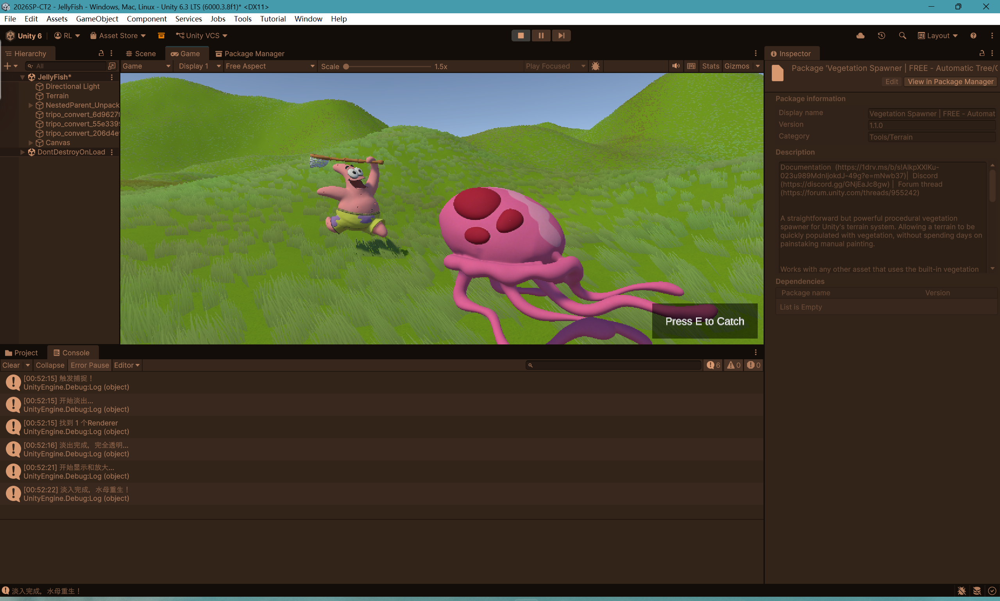
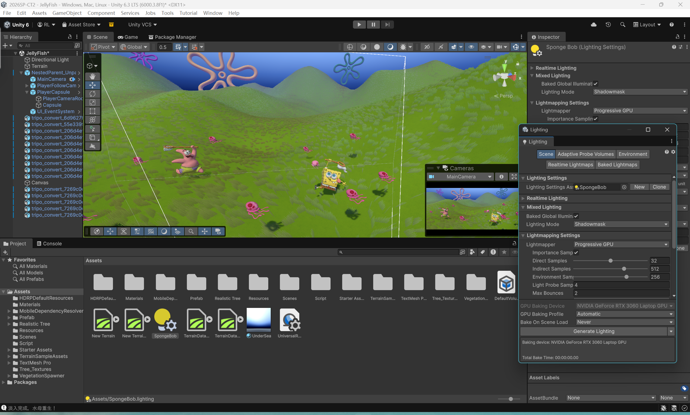
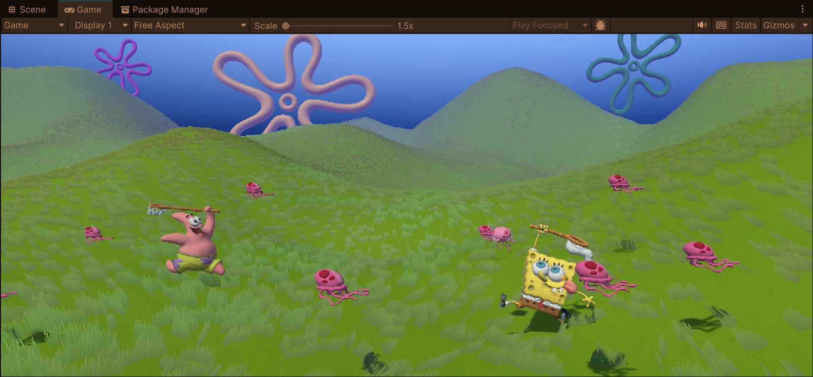

Ruby Li, qli16@inside.artcenter.edu
This project is a simple interactive dream space inspired by SpongeBob SquarePants, especially the Jellyfish Fields in Bikini Bottom. I used Unity to build the environment and interactions, and I also used AI tools to help generate some visual assets.

I took my inspiration from the scene in SpongeBob SquarePants where SpongeBob and Patrick are jelly‑fishing. It felt cute and fun, a perfect match for an interactive experiment.
The plan was simple: build a grassy, hilly “jellyfish field”, add floating characters and jellyfish, and let the player walk around and try to catch them.
The terrain was made with Unity’s terrain editor. I sculpted a lawn with gentle slopes and used a cartoon-style grass asset from the Unity Asset Store to give it an anime look.
A basic first‑person controller lets the user move around and feel like they are walking through the field.


I generated 3D models of SpongeBob, Patrick, and the jellyfish using the Tripo AI tool and then imported them into Unity. The jellyfish are the objects the player can interact with, while SpongeBob and Patrick run in the field.
Using an AI helper in VSCode, I wrote simple scripts that make the characters and jellyfish float up and down constantly. No complex animation, just a small vertical move to keep things alive.
The only real gameplay is catching jellyfish. When the player gets close, a message shows: “Press E to catch the jellyfish.” Pressing E triggers a tiny animation: the jellyfish scales down from 100% to 0%, disappears for five seconds, then grows back to 100% again. It looks like the jellyfish vanishes and reappears.
This mechanic is easy and lighthearted; it uses proximity checks, a UI prompt, and simple scaling to give the scene some interactivity.


I adjusted the lighting and sky settings to make the space feel closer to the visual world of SpongeBob. I used a brighter blue sky, vibrant green terrain, and colorful flower-shaped background elements—these flowers were also generated with Tripo AI—to evoke the familiar cartoon style of Bikini Bottom.

The final result is a small interactive dream space where the player can explore a stylized underwater field, encounter SpongeBob and Patrick, and catch floating jellyfish.
Through this process, I learned how to use Unity’s terrain system, import 3D assets, create simple scripted motion, and design a basic first-person interaction.